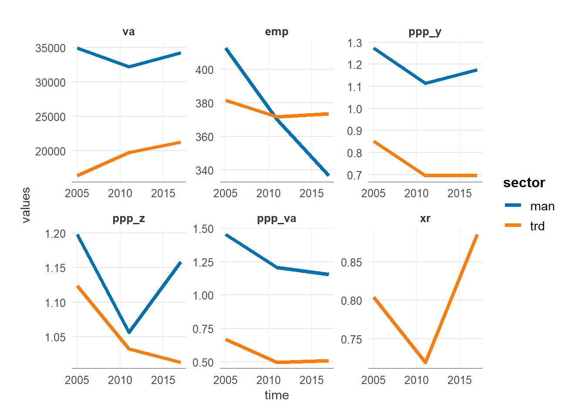

GGDC data
Näytä koodi
dat_ggdc_23 |>
filter_recode(
geo = "FI",
sector = c("man", "trd")
) |>
ggplot(aes(time, values, colour = sector)) +
facet_wrap(~vars, scales = "free") +
geom_line()
Näytä koodi
dat_ggdc_23 |>
filter_recode(
geo = c("FI", "US", "DE"),
# sector = c("man", "trd", "bus", "con"),
vars = c("ppp_x", "ppp_y", "ppp_va", "xr")
) |>
ggplot(aes(time, values, colour = sector)) +
facet_grid(geo~vars, scales = "free") +
geom_line()